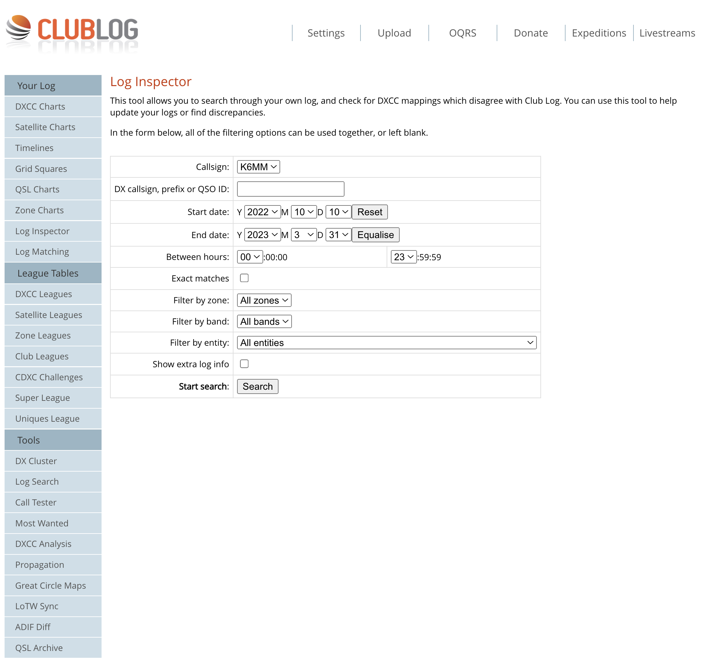
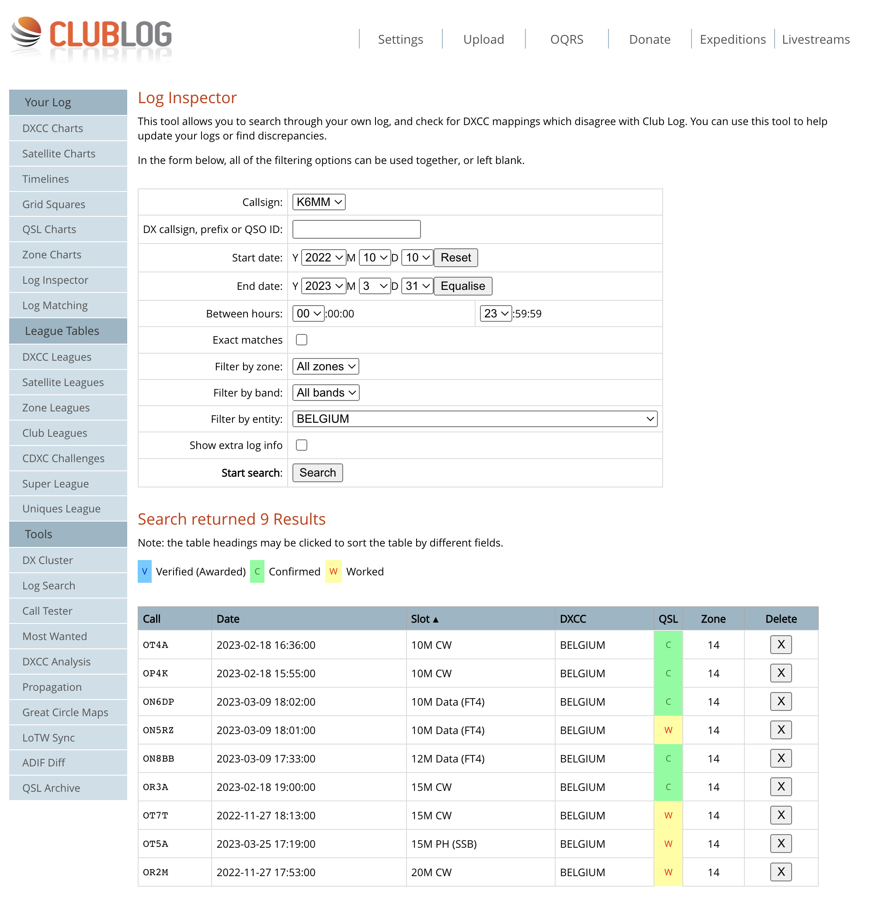

| If you participated in the Tournament and are a Club Log user…..read on. Otherwise go have another cup of coffee. Jim asked me to send out these tips on how to use Club Log to calculate your total points in the NCDXC DX Contest (which ended March 31, 2023). Method 1: Date Range You can use the Log Inspector in Club Log to generate a list of all QSOs between 10/10/22 and 3/31/23. From Club Log’s home page, click on LOG INSPECTOR in the left-side menu. For Start Date, enter 2022-10-10. End date = 2023-03-31. Leave all filters set to ALL (Zone, Band, Entity). See attached snapshot 1. Click Search button. You should then see a complete listing of all of your QSOs for that time period. You can then either print out the screens, or copy-paste the data from the screen into a spreadsheet and go from there. One problem I found, is that Log Inspector seems to have a limit of 1000 QSOs per screen, so to get around that limitation, and to make sure I captured all of my eligible QSOs, I generated 6 separate listings — one for each of the 6 months involved: October 10, 2022 thru October 31, 2022 November 1-30, 2022 December 1-31, 2022 January 1-31, 2023 February 1-28, 2023 March 1-31, 2023 This method is aa little cumbersome, but at least you’ll have all the data in one place when you’re done. Method 2: Filter By Entity Again using Log Inspector, and the same date range (10/10/22 thru 3/31/23), click on the FILTER BY ENTRY drop down menu and select a country. In Snapshot 2, I’ve shown my 9 QSOs for Belgium. If you double click on the 3rd heading (SLOT), the list will sort from Low-To-High, so you can easily see which bands & modes you worked. Your final point total for that entity will depend on which category you entered (CW, SSB, Digital, Mixed). Using this Filter By Entity method, you can easily tabulate your final score…..just a lot of mouse clicking to get there. Hope this helps. Jim wants your final Category + Total Points by April 15, 2023. GL. 73, John, K6MM  
|